Amazon Bedrock AgentCore を活用した AI エージェントチャットアプリケーション
ユーザーマニュアル
Donuts Chat は、Amazon Bedrock AgentCore を活用した高機能な AI エージェントチャットアプリケーションです。複数の AI モデルやエージェントを選択して、様々なタスクを効率的に実行することができます。
複数の専門エージェントを選択して、それぞれの得意分野に応じたタスクを実行できます。
Claude、Nova など複数の AI モデルから用途に応じて選択できます。
チャット履歴、エージェント、ツールを素早く検索できます。
画像を添付してAIに分析させることができます。
ブラウザで Donuts Chat の URL にアクセスします。以下のようなログイン画面が表示されます。
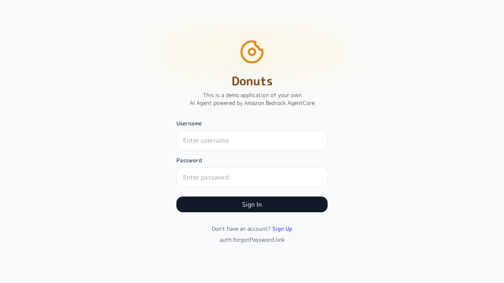
以下の情報を入力してください：
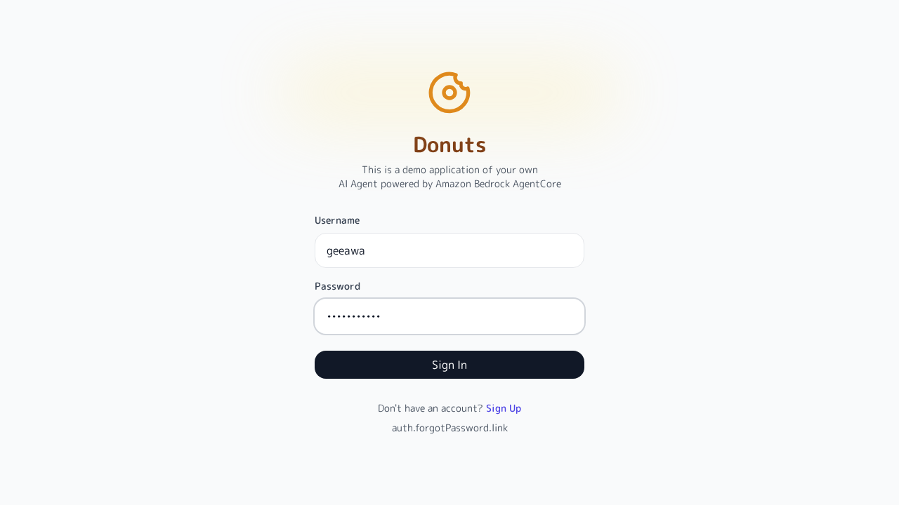
「Sign In」ボタンをクリックしてログインします。認証が成功すると、メインのチャット画面に遷移します。
💡 ヒント：アカウントの新規作成
アカウントをお持ちでない場合は、「Sign Up」リンクをクリックして新規登録を行ってください。
サイドバーの下部にあるユーザー名ボタンをクリックします。
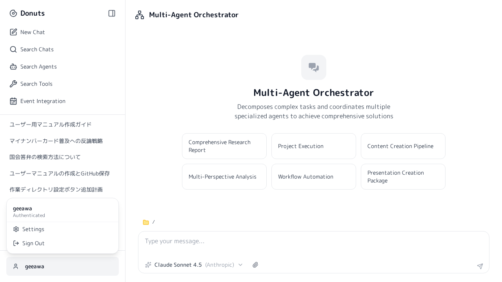
表示されたメニューから「Sign Out」をクリックするとログアウトできます。
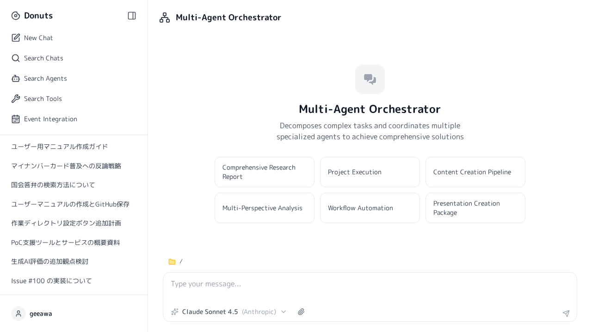
ログイン後のメイン画面は以下の要素で構成されています：
| エリア | 説明 |
|---|---|
| サイドバー（左） | ナビゲーションメニューと過去のチャット履歴が表示されます |
| メインエリア（中央） | チャットのメッセージが表示されるエリアです |
| 入力エリア（下部） | メッセージの入力、エージェント選択、モデル選択を行います |
サイドバーの「New Chat」をクリックして新しいチャットを開始します。
画面下部の入力欄（「Type your message...」）にメッセージを入力します。
Enter キーを押すか、送信ボタンをクリックしてメッセージを送信します。AI からの応答がリアルタイムで表示されます。
入力欄の横にある「Attach image」ボタンをクリックします。
ファイル選択ダイアログから添付したい画像を選択します。
画像について質問や指示を入力して送信すると、AI が画像を分析して回答します。
サイドバーには過去のチャット履歴が一覧表示されます。続きを話したいチャットをクリックすると、そのチャットを再開できます。
Donuts Chat では、複数の専門 AI エージェントから用途に応じたエージェントを選択できます。
画面下部の入力欄の上に、現在選択中のエージェントが表示されています。
「...」ボタンをクリックすると、利用可能なすべてのエージェントが表示されるモーダルが開きます。
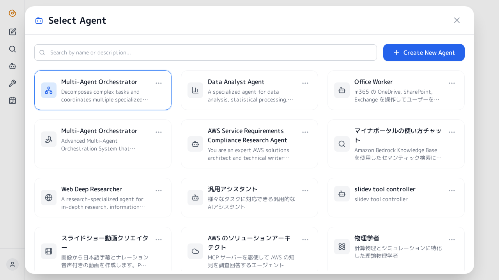
検索ボックスでエージェントを検索するか、一覧から使用したいエージェントをクリックして選択します。
| エージェント名 | 用途 |
|---|---|
| Multi-Agent Orchestrator | 複数のエージェントを統合して複雑なタスクを処理 |
| Comprehensive Research Report | 詳細なリサーチレポートの作成 |
| Project Execution | プロジェクトの実行と管理 |
| Content Creation Pipeline | コンテンツ作成ワークフロー |
| Workflow Automation | ワークフローの自動化 |
💡 ヒント：新しいエージェントの作成
エージェント選択モーダルの「Create New Agent」ボタンから、カスタムエージェントを作成することもできます。
タスクの特性に応じて、異なる AI モデルを選択できます。
入力欄の横にある現在のモデル名（例：「Claude Sonnet 4.5」）をクリックします。
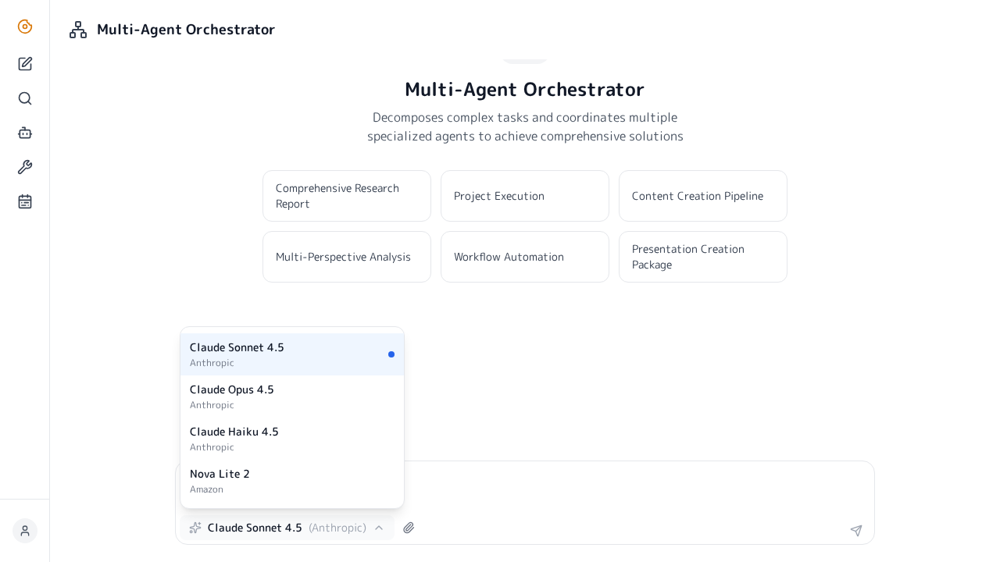
ドロップダウンから使用したいモデルを選択します。
| モデル | 提供元 | 特徴 |
|---|---|---|
| Claude Sonnet 4.5 | Anthropic | バランスの取れた高性能モデル |
| Claude Opus 4.5 | Anthropic | 最高性能、複雑なタスク向け |
| Claude Haiku 4.5 | Anthropic | 高速レスポンス、軽量タスク向け |
| Nova Lite 2 | Amazon | コスト効率の良い軽量モデル |
サイドバーの「Search Chats」をクリックします。
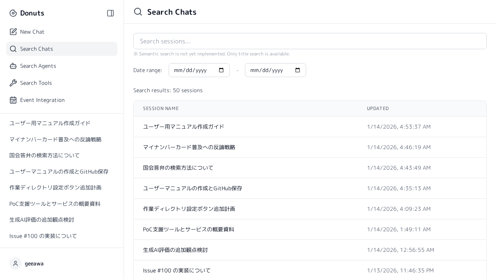
検索ボックスにキーワードを入力すると、該当するチャットがフィルタリングされます。
サイドバーの「Search Agents」をクリックします。
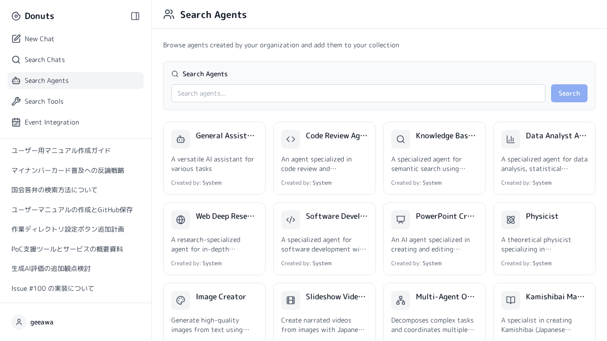
エージェント名や説明文で検索できます。
AI エージェントが使用できるツール（外部機能）を検索・確認できます。
サイドバーの「Search Tools」をクリックします。
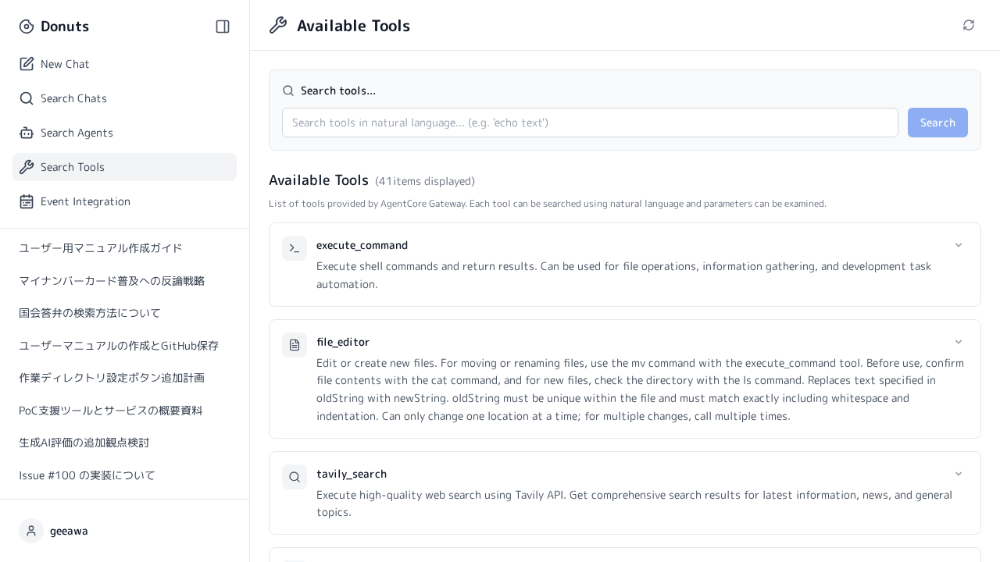
自然言語でツールを検索できます（例：「echo text」）。
各ツールの「Show Details」ボタンをクリックすると、ツールの詳細な説明とパラメータを確認できます。
Event Integration 機能を使用すると、外部システムとの連携やイベントベースの処理を設定できます。
サイドバーの「Event Integration」をクリックします。
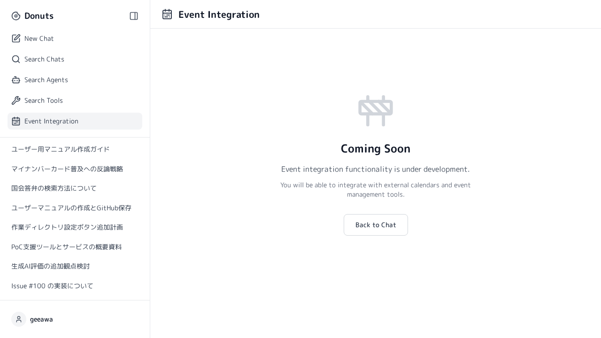
イベント連携の設定を確認・編集できます。「Back to Chat」ボタンでチャット画面に戻れます。
アプリケーションの各種設定を変更できます。
サイドバー下部のユーザー名をクリックし、「Settings」を選択します。
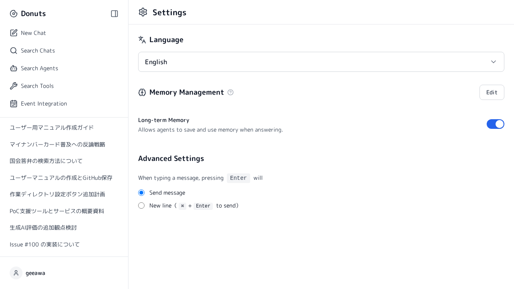
| 項目 | 説明 |
|---|---|
| Language | 表示言語の選択（English / 日本語など） |
| Working Directory | 作業ディレクトリの設定（Edit ボタンで編集） |
| Stream Response | AI の応答をリアルタイムで表示するかどうか |
| Enter Key Behavior | Enter キーの動作（送信 / 改行） |
💡 ヒント：Enter キーの動作
「Send message」を選択すると Enter キーでメッセージを送信します。「New line」を選択すると Enter キーで改行し、⌘+Enter（Mac）または Ctrl+Enter（Windows）で送信します。
以下を確認してください：
問題が解決しない場合は、管理者にお問い合わせください。
サイドバーのチャット一覧から、削除したいチャットにマウスを合わせると表示される削除ボタンをクリックしてください。
PNG、JPEG、GIF、WebP 形式の画像に対応しています。
長時間操作がない場合、セキュリティのためセッションが切れることがあります。再度ログインしてください。過去のチャット履歴は保持されています。